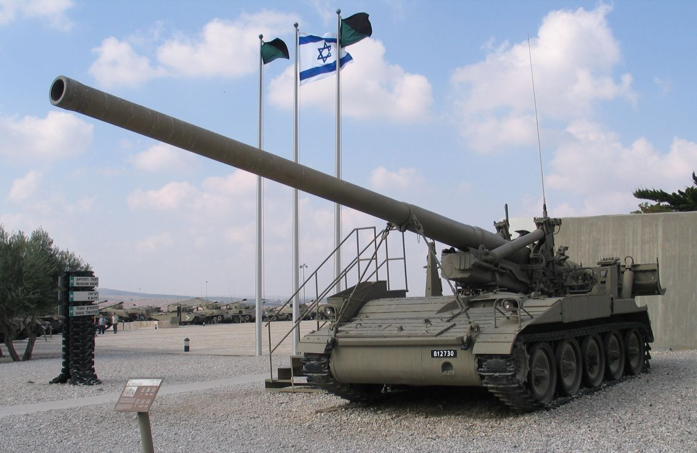

M107 Self-Propelled Gun
Призначення: важка самохідна гармата великої потужності для контрбатарейної боротьби та знищення важливих об'єктів у тилу. Країна: США. Роки виробництва: 1962-1980. Експлуатація: 1962-кінець 1990-х (у США), у деяких країнах досі перебуває в резерві. Кількість: 524 шт. Озброєння: 175-мм довгоствольна гармата M113. Броня: до 13 мм (екіпаж на відкритій платформі повністю беззахисний під час стрільби). Маневреність: 56 км/год, дизельний двигун Detroit Diesel. Екіпаж: 5 осіб безпосередньо на САУ + ще 8 осіб розрахунку на допоміжній машині. Суть у бою: наддалекі удари з безпечної відстані. Завдяки рекордному стволу гармата M107 могла закидати фугасні снаряди вагою 66 кг на відстань до 32-40 кілометрів, успішно пригнічуючи будь-які артилерійські батареї противника. Відомі битви: Війна у В'єтнамі, Війна Судного дня (активно застосовувалася армією Ізраїлю). Цікава особливість: через ураганну силу відкату 175-мм гармати, позаду машини опускався величезний гідравлічний сошник-лопата. Коли САУ стріляла, весь корпус помітно здригався, а земля під ногами тремтіла в радіусі кількох сотень метрів.
